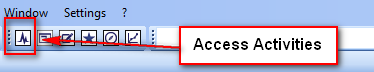

System access¶
Windows Client¶

Start Activities from the toolbar of the Windows client.
Click the Activities symbol in the toolbar. The Activities application opens in a new tab of the view area.
Web Browser¶
Activities are displayed as start page in the web interface after login. If you have opened a detail view or the search page, jump to the activities using the Home button on the navigation bar.
Windows Client Info Dialog¶
The associated postings and messages are displayed on the Activities tab in the business object’s info dialog. In this way, you can also see activities to which you have not explicitly subscribed.
Detail view in the web user interface¶
The detail view of the business object in the web interface contains an Activities area that can be minimized.